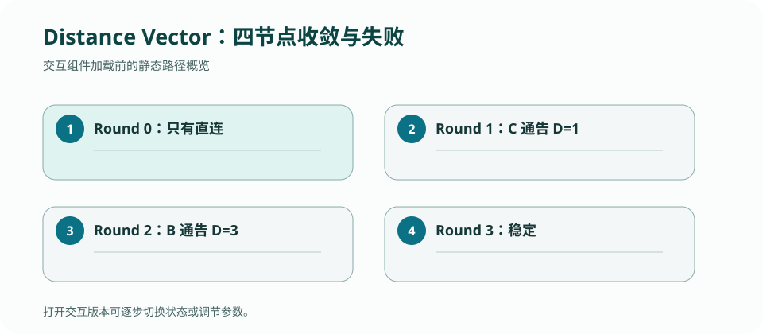

CS 168 · LECTURE 06 · 2026-09-15 · 路由
距离向量让每台路由器只向邻居报告“我到目的地多远”，用局部 Bellman–Ford 更新逐步拼出全局路径。
版本快照：Fall 2026 官方课表与在线教材，核对日期 2026-09-02；官网仍标注 under construction，日期与政策可能变化。
历史证据边界：PointBreaker 仓库只用于复盘 invariant 与 bug，不代表 Fall 2026 当前提交接口。
为什么好消息传播快、坏消息却可能在邻居之间反复自证？
邻居 \(v\) 从本地 port 抵达的通告包含 \(D_v(d)\)。路由器查出链路代价 \(c(x,v)\)，形成候选值并与现有表比较。若目的未知、候选更短，或现有路线本来就经由该邻居，就应替换并刷新 expire time。
“同一 next hop 的更差通告也要接受”很关键：否则链路代价上升后，旧的低值会永远残留。历史实现的条件正包含 absent / same port / strictly better 三种情况，这是一个很好的协议不变量。
若 A 经 B 到达 d，链路断开后 B 可能误以为 A 还有一条路，A 又根据 B 把距离增加；两者轮流把陈旧路径包装成新信息。每轮只增长一点，形成 count-to-infinity。
split horizon 不把从某邻居学到的路线再告诉它；poison reverse 则明确向该邻居通告无穷。它们能阻止两节点环路，但不能消除所有多节点环路，因此协议仍需有限 INFINITY、超时和更强的新鲜度机制。
增量更新必须记住“某目的地上一次向某端口通告的有效 metric”，键自然是 ((destination, port))，而不只是 destination。poison reverse 会让同一目的对不同邻居产生不同广告值，更说明历史必须按端口区分。
force update、single-port update、triggered update 是三个正交控制维度。实现时先计算每个出口应看到的值，再比较历史并决定是否发送，可避免在多层分支中重复协议逻辑。
提交历史从 stage 4、stage 8、route poisoning 到 q10 调试，最后在 2023-11-09 标记全部测试完成，清楚反映出难点从基本 Bellman–Ford 转向变化传播。最终代码用 history[(dst, port)] 支持增量更新，并用 FOREVER 区分直连静态路线。
值得重新审查的边界是 single_port 分支：发送指定端口后，函数仍会进入普通非 force 分支。对当前 Fall 2026 spec，“指定端口时只能发送到该端口”是明确契约；复盘时应写一条测试，确认旧实现没有顺带向其他端口发送变化。这里的目标是理解，而不是把旧代码当作当前可提交答案。
异步迭代、链路失效和计数到无穷是时间序列问题，需要逐状态推演。

手推 A—B—C—d 在 C—d 断开后的三轮广告，分别在无保护、split horizon、poison reverse 下记录 B/C 的表项。
检查：收到同一 next hop 对目的 d 的更差 metric 时，为什么通常仍要更新？
每台路由器只保存自己的 route table，并接收邻居的 distance vector。对目的地 d，经邻居 v 的候选代价是 \(c(x,v)+D_v(d)\)。“知道邻居说了什么”与“当前采用哪条路”是两份不同状态。
检查：A 收到 B 宣告 D 的代价为 5，且 A–B 代价为 2，候选值是多少？
链路代价分别为 A–B=1、B–C=2、C–D=1。采用同步 round 只是为了可手算；真实协议可异步到达，但每次事件仍执行同一个候选更新。
| Round | 收到的关键 advertisement | 候选计算 | A 到 D | B 到 D | C 到 D |
|---|---|---|---|---|---|
| 0 | 只知道直连 | C: 直连 D=1 | ∞ | ∞ | 1 via D |
| 1 | C→B: D=1 | B via C: 2+1=3 | ∞ | 3 via C | 1 via D |
| 2 | B→A: D=3 | A via B: 1+3=4 | 4 via B | 3 via C | 1 via D |
| 3 | 各邻居重复稳定值 | 所有 candidate 均不更优 | 4 via B | 3 via C | 1 via D |
不变量：一条安装进表的有限路由必须来自直连目的地或某个仍可用端口上的邻居宣告；metric 必须等于该端口代价加邻居 metric，并受 infinity 上限约束。
检查：Round 1 时 A 能否立即学到 D=4？
检查：B 收到 C 的 D=1 后，哪份状态先产生 candidate？
| 机制 | 失败后的 advertisement | B/C 的演化 | 能防什么 | 不能防什么 |
|---|---|---|---|---|
| 无保护 | C 宣告 ∞ 前可能听见 B 仍说 3 | C 取 2+3=5 via B；B 又取 2+5=7，5→7→9… | 无 | 形成两节点误导并 count to infinity |
| Split horizon | B 不向 next hop C 宣告自己经 C 学到的 D | C 不会被 B 的旧 route 立即骗回去 | 直接两节点环 | 三节点以上互相误导 |
| Poison reverse | B 明确向 C 宣告 D=∞ | C 可立刻删除 B 方向候选；到期/触发更新传播 | 两节点环，且撤销更明确 | 一般多节点环仍需 metric cap 与 expiration |
检查：poison reverse 中，B 向 C 宣告目的 D 的哪个 metric？
| 状态 | 含义 | Link up / advertisement / expiration | 保护的不变量 |
|---|---|---|---|
route table[dst] | 当前 best next hop、port、metric、expiration | 候选比较后替换；所选候选失效时重算 | 转发只使用当前可用的最佳候选 |
history[(dst, port)] | 每个邻居最后一次关于 dst 的宣告 | 收到 update 时覆盖；过期时删除/置 ∞ | 丢失当前 best 后能从其他端口重算 |
expiration | 宣告的租约 | 更新时续期；timer event 触发 invalidation | 沉默邻居不会永久留下陈旧路由 |
metric / next hop | 代价与实际出口 | 只在 candidate 更优或现用 route 变化时更新 | metric 与 next hop 必须来自同一候选 |
历史实现证据：PointBreaker/routing 用于检查这些 state 与 event 的映射；它不是 Fall 2026 官方 solution，也不应被复制成当前提交答案。
只保存当前 best route 时，一旦它过期，路由器不知道第二名候选是否仍有效，只能等待下一次周期通告。更糟的是，来自同一端口的变差 update 可能被“不是更优”逻辑忽略，让陈旧 route 留在表中。history 的用途不是多存一份相同数据，而是让删除与重算成为确定的 state transition。
检查：若 B 当前经 C 到 D，随后 C 对 D 宣告从 1 变为 8，B 应怎样处理？
检查：expiration timer 最直接防止什么？
history[(dst, port)]、route table 与 advertisement 的因果顺序。必须能说出 before state、收到的消息、candidate、after state 和发出的 update；只写 Bellman–Ford 公式不算完成。
正文是 CourseStack 的中文解释与重新绘制的教学例子；官方页面负责课程原始定义，历史仓库只提供你的实现证据。